Maya, L5 Trip Concierge
An AI concierge for a fully self-driving car: she plans the stops, phones the shops and replans on the way, and sends the empty car to run errands on its own.
- Type
- Academic project, self-initiated
- When
- 2026
- My role
- Everything: research framing, conversation and UX design, UI, prototype
- Team
- Solo
- Platform
- Car central display, windscreen light band, phone
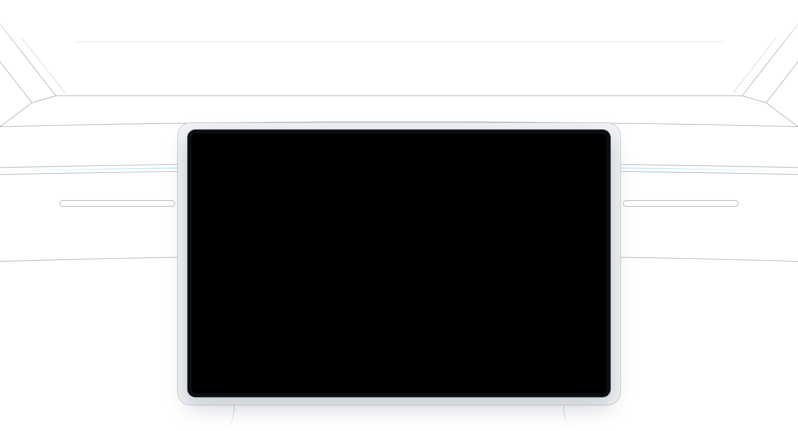
Context and role
Maya is an academic project I set myself in 2026: what could an in-car assistant be once nobody has to drive? Not a voice menu for the media player, but a concierge that takes over the errands around a trip.
The concept targets a large central touchscreen and a passive light band at the base of the windscreen, similar to the panoramic displays in the newest car interiors. It is a concept only, not affiliated with any car maker.
- I framed the problem, a hypothesis and 16 assumptions ranked by risk, each tied to a way to test it.
- I wrote the hero scenario and the conversation design: what Maya says, and what she leaves to the screen.
- I mapped the journey, the task flow, a voice and touch parity matrix and 17 edge cases.
- I designed greyscale wireframes, the visual direction, 25 high-fidelity screens and a clickable prototype.
The problem: the car drives, you still do the errands
A self-driving car frees your hands, not your agenda. Navigation handles routes, not commitments. A passenger still has to work out the order of the stops, phone the pharmacy, check the shop is open, and replan by hand when someone calls with a change. The time the car gives back isn't really free.
Maya is for time-poor people whose evenings are a chain of pickups and errands; in the story, Michael, a father of two.
- Commitments, not destinations. The hard part of an evening of errands is knowing the prescription is ready, the flowers will arrive and everyone is collected on time.
- Plans change on the way. A shop is out of stock, a family member calls, traffic builds. Today each change means another round of calls and map searches.
At Level 5 the car can do more than drive. An assistant with delegated trust, like an executive assistant, could hold the whole plan, talk to shops and keep the passenger on time. And a car that sits empty during dinner could run an errand by itself.
Assumptions first, then insights
As a solo academic project there was no budget for user research, so I made the assumptions explicit instead of hiding them. I wrote a hypothesis, ranked 16 assumptions by risk and confidence, and tied each to a test I would run with more time.
We believe that time-poor people will hand over trip logistics entirely to an AI that asks only what it cannot know, acts on its own, follows the conversation, and makes every action visible and reversible. We will know we are right when users arrive on time, rarely undo what Maya did, and trust her with more over time.
InsightPeople think in needs, not addresses.
So I designedA briefing like "family dinner tonight, get the kids and my wife, and that prescription". Maya asks only what she can't know: in the story, two questions.
InsightTalking costs attention in a family cabin.
So I designedMaya speaks only when she needs Michael. The screen is the confirmation, so she never reads the plan back.
InsightNot every change deserves the same interruption.
So I designedChanges caused by the world (a pharmacy out of stock) happen silently and visibly. Changes heard in conversation get a chime, the phrase Maya heard, and Undo.
InsightTrust comes from visibility, not approval steps.
So I designedDo first, show clearly, undo easily. Limits are set once (calls, payments up to an amount, listening), every action lands in a "Done for you" ledger, and the prescription shows only its reference number on the shared screen.
InsightAn empty self-driving car is idle capacity.
So I designedCourier mode: Maya books an errand for the empty car only once the shop has agreed the time, the person and the handover.
Decisions and trade-offs
I kept the scope to one evening and one user, designed for Level 5 only, and moved everything else to an explicit "if I had a month" list: other errand types, guest mode, conflicts between passengers, wallet statements, a regulation review for empty cars, and real user research.
| Decision | What it gains | What it gives up |
|---|---|---|
| Full trust: Maya acts, pays and listens | Feels like a real assistant | No approval before calls or payments under the limit |
| Overheard intent acts on high confidence, asks on medium | Plans change without being managed | Risk of acting on talk that wasn't meant for her |
| Courier errands only with an agreed handover | Errands don't fail at the door | Fewer errands qualify |
Validation, riskiest first
Does overheard intent feel helpful, or creepy? Would people send an empty car? These are the tests I would run first, with targets, not results.
| Assumption | Test | Target |
|---|---|---|
| Listening to cabin talk and calls is welcome; false positives are cheap | Scripted audio clips, real changes and decoys | Undo under 10% |
| People will send their empty car, and accept a cabin camera | Clickable courier flow, 5 participants | 4 of 5 would send it |
| Shops cooperate with an AI caller and an empty car | Scripted calls to local shops | 90%+ of errands done without Michael |
| Users accept "do first, show clearly, undo easily" | Wizard of Oz briefing, 5 participants | Under 10% of questions Maya could have answered herself |
| Spare time and the light band work at a glance | 5-second glance test | 80%+ correct; 95%+ on time |
The experience: a family dinner run
At 17:15 the car collects Michael at work. He needs to collect his son, his daughter and his wife, and get a new prescription, before a family birthday dinner at 19:00. Over one evening there are three reroutes, each with a different cause, and one errand run by the empty car. Spare time stays at 5 minutes in every version of the plan.

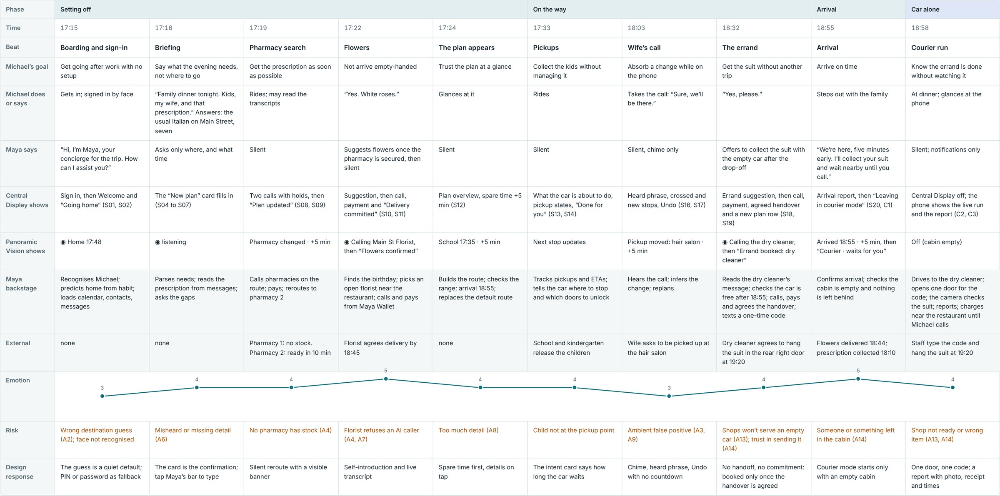
The system
Voice and touch are equals: every task can be done by voice alone or by touch alone, so the concept works for people who find speaking hard and for people who find touch hard. Everything Maya says is captioned, every chime has a visual twin, and colour never carries meaning on its own.

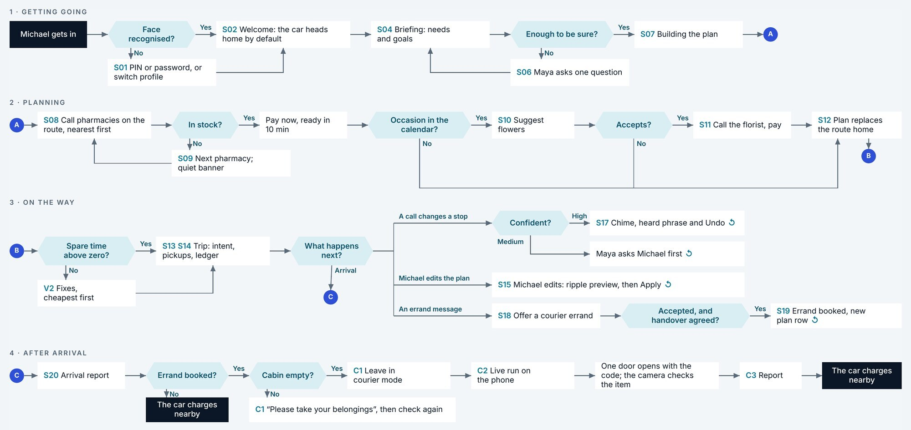

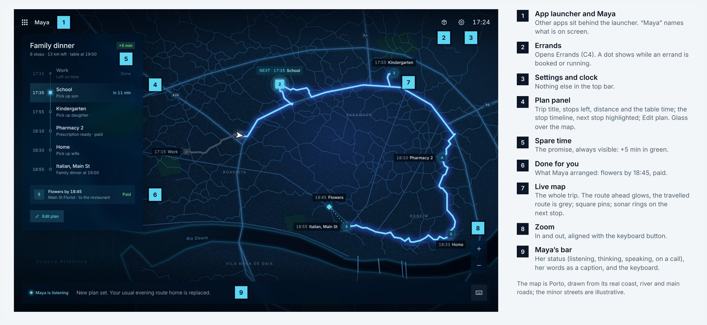
Nine moments from the evening
Scene 5, the plan replacing the route home, plays in the hero above; scene 10, the courier run, follows below.
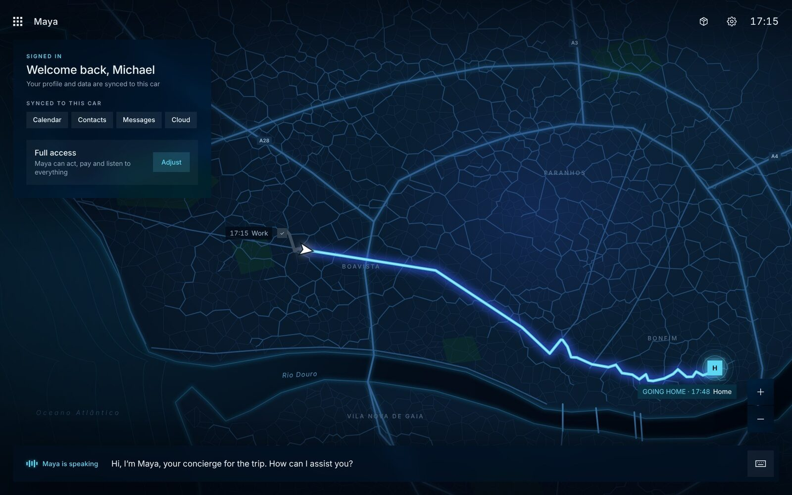
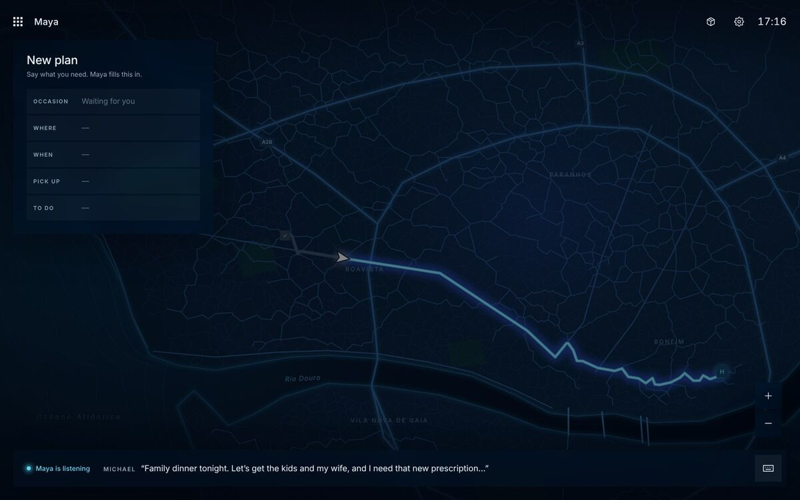
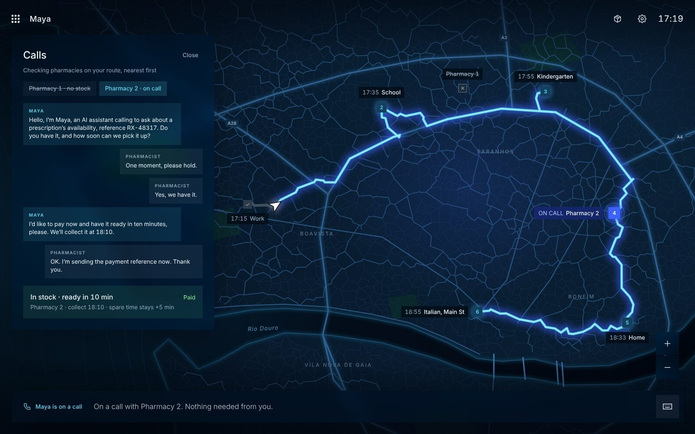
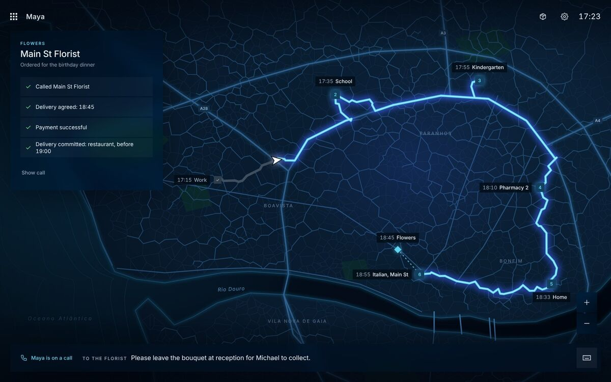
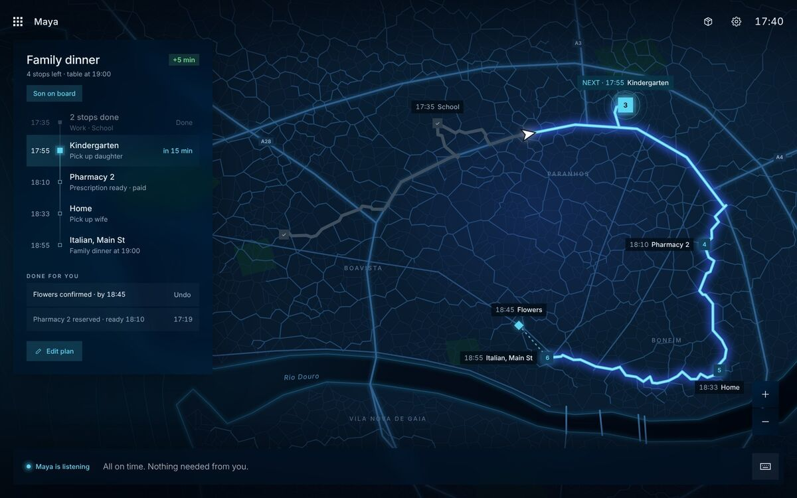
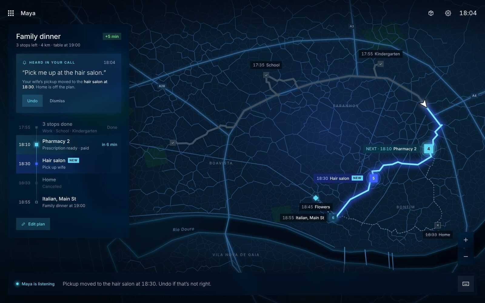
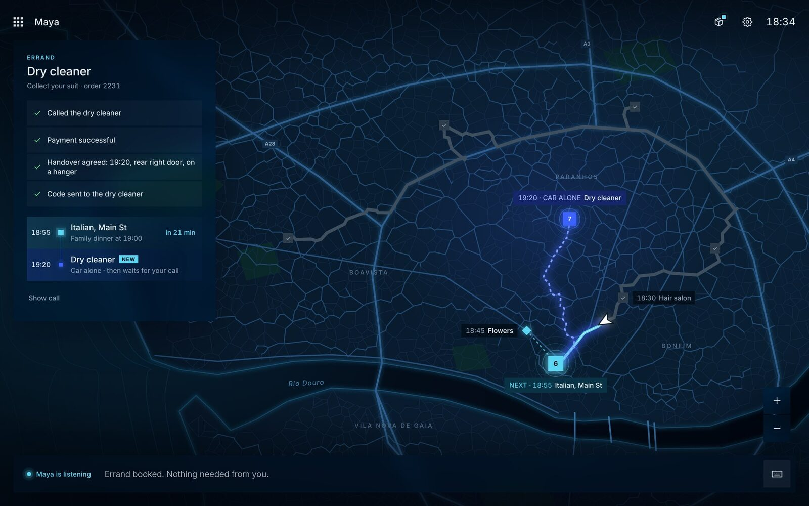
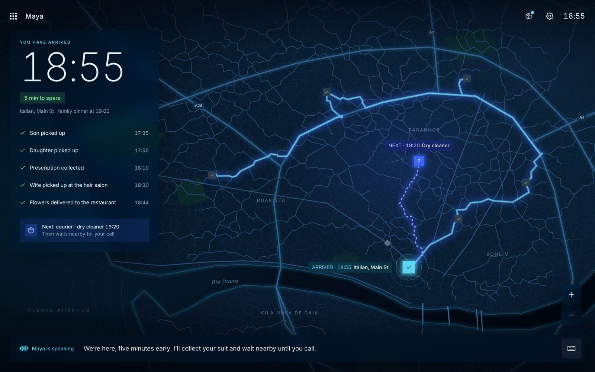
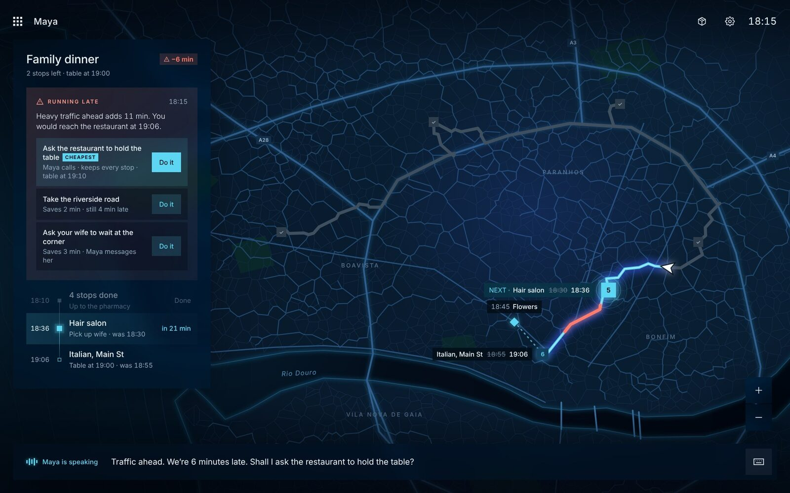
Courier mode, scene 10
After the family is dropped off, a message says the suit is ready at the dry cleaner. Maya offers to collect it with the empty car, phones the shop to pay and agree the handover, and books it only then. The car checks the cabin is empty, leaves, and opens one door with a one-time code. Michael follows the run on his phone, view only, and gets a report with a photo.
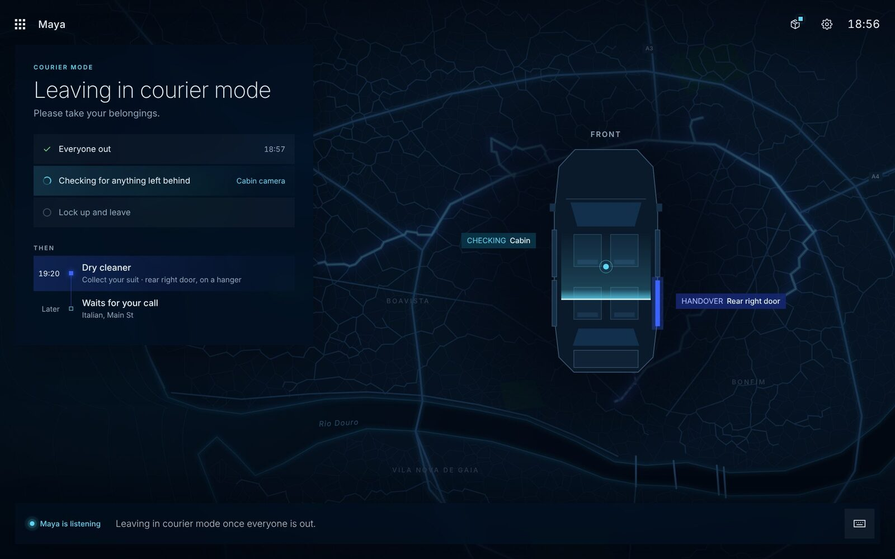
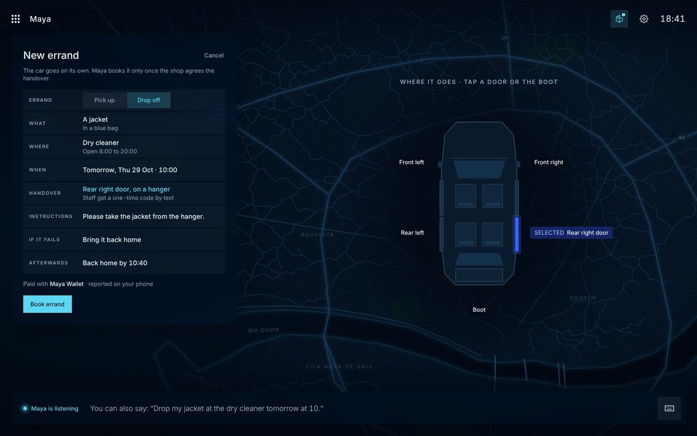
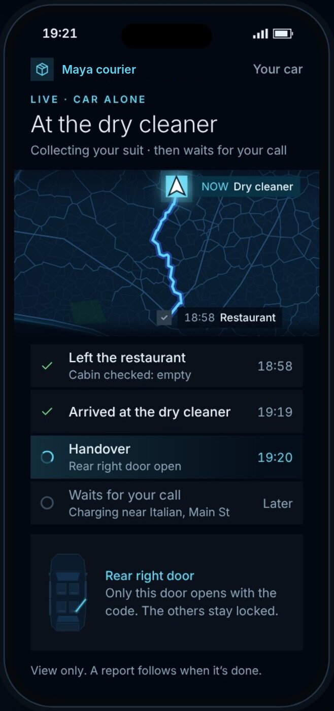
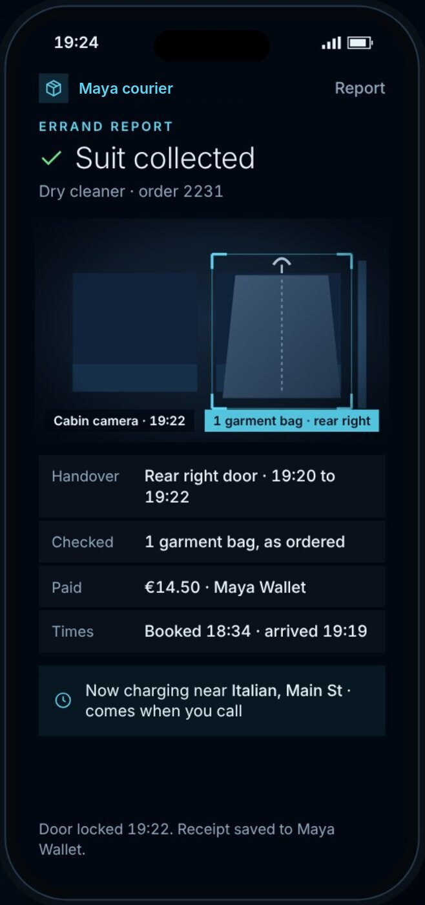
Glance, don't read: the windscreen band
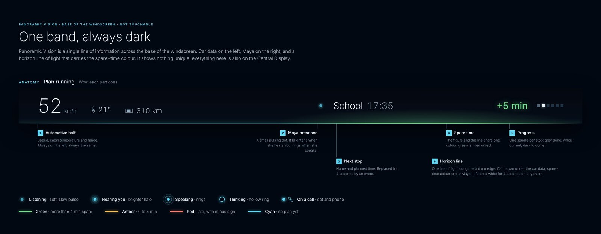
What it delivered
As an academic concept, Maya has no real-world results yet. What it produced:
- 25high-fidelity screensAcross the car display and the phone.
- 16assumptions ranked by riskEach tied to a test.
- 17edge casesEach with its expected behaviour.
Lessons
Make assumptions the backbone
Without research, ranking assumptions by risk and tying each to a test kept the concept honest and showed what to validate first: listening in the cabin, and shops' cooperation.
Silence is a design material
Most of what Maya does is never said. Deciding what not to speak, and what the screen must confirm instead, shaped every scene.
Want the longer version of this story? Email me at oliveira.anibal@gmail.com or find me on LinkedIn.